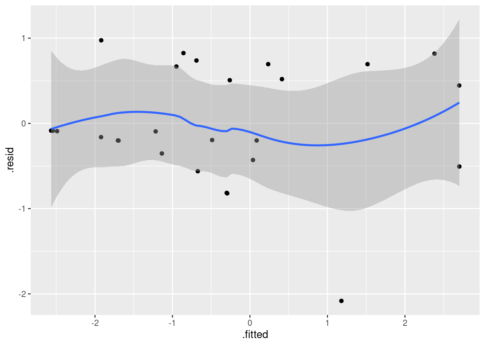

library(survival)
library(tidyverse)
library(marginaleffects)
library(survminer)30 Survival analysis
30.1 The Worcester survey
The Worcester survey was a long-term study of all myocardial-infarction1 victims admitted to hospitals in the Worcester, Massachusetts area.2 The data have been well studied, and can be found in the file link.
- Read the data and display the first few rows of the data frame. You might get an extra column, which you can ignore. For your information, the variables are:
patient ID code
admission date
date of last followup (this is the date of death if the patient died)
length of hospital stay (days)
followup time (days) (time between admission and last followup)
followup status: 1=dead, 0=alive
Age in years (at admission)
gender (0=male, 1=female)
body mass index (kg/m\(^2\))
Create a suitable response variable for a Cox proportional hazards model for time of survival, using the followup time and followup status.
Fit a Cox proportional hazards model predicting survival time from age, gender and BMI. Obtain the
summary(but you don’t need to comment on it yet).Test the overall fit of the model. What does the result mean?
Can any of your explanatory variables be removed from the model? Explain briefly.
Remove your most non-significant explanatory variable from the model and fit again. Take a look at the results. Are all your remaining explanatory variables significant? (If all your explanatory variables were previously significant, you can skip this part.)
Calculate the 1st quartile, median, and 3rd quartiles of age and BMI. (
quantile.) Round these off to the nearest whole number. (Do the rounding off yourself, though R has a functionroundthat does this, which you can investigate if you want.) As an alternative, you can get these by passing the whole data frame, or the columns of it you want, intosummary.Make a data frame out of all the combinations of age and BMI values (that you obtained in the previous part) suitable for predicting with.
Obtain predicted survival probabilities for each of the values in your new data frame. Use your best model. (You don’t need to look at the results, though you can if you want to.)
Make a graph depicting the survival curves from
survfitwith different colours distinguishing the different survival curves.What is the effect of age on survival? What is the effect of BMI on survival? Explain briefly. (You will have to disentangle the meaning of the different coloured lines on the plot to do this.)
30.2 Drug treatment programs
One of the goals of drug treatment programs is to lengthen the time until the patient returns to using drugs. (It is not generally possible to prevent patients from ever using drugs again.) In one study, over 600 former drug users took part. Two different programs, a short program and a long program, were offered at two different sites, labelled A and B. The data can be found in link. The variables are these:
ID: patient ID numberage: patient age at enrollment into the studyndrugtx: number of previous drug treatmentstreat: 0 for short treatment program, 1 for long programsite: 0 for site A, 1 for site Btime: time until return to drug usecensor: whether the subject returned to drug use (1) or not (0) during the follow-up periodherco: whether subject used heroine or cocaine in the last 3 months: 1 is both, 2 is one (either heroine or cocaine), 3 is neither.
Read in the data and check in one way or another that you have what was promised above.
There are some missing values in the dataframe. Demonstrate this using
summary. Pipe the dataframe intodrop_naand show that they have gone. (drop_naremoves all rows that have missing values in them.)Some of these variables are recorded as numbers but are actually categorical. Which ones? Re-define these variables in your data frame so that they have sensible (text) values.
Create a suitable reponse variable for a Cox proportional hazards regression that predicts time until return to drug use from the other variables. This requires some care, because you need to be sure about what the censoring variable actually represents and what you need it to represent.
Look at the first few values of your response variable. Why is the fifth one marked with a
+? Explain briefly.Fit a Cox proportional hazards model, predicting from all the other variables (except for
rowandID) that you haven’t used yet. Display the results.Find which explanatory variables can be removed at \(\alpha=0.05\) (there should be two of them). Bear in mind that we have categorical variables, so that looking at the output from
summaryis not enough.Remove all the non-significant explanatory variables and re-fit your model. By carrying out a suitable test demonstrate that your smaller model is the better one.
* Display your better model. Are all of the explanatory variables significant? Do their slope coefficients have sensible signs (plus or minus), based on what you know or can guess about drug treatments? Explain briefly.
We have three variables left in our model,
age,ndrugtxandtreat. The quartiles of age are 27 and 37, the quartiles ofndrugtxare 1 and 6, and the two possible values oftreatareshortandlong. Create a data frame with variables of these names and all possible combinations of their values (so there should be 8 rows in the resulting data frame). Display the resulting data frame.Obtain predicted survival probabilities for each of the values of
age,ndrugtxandtreatused in the previous part. You don’t need to display it (we are going to plot it shortly).Plot your predicted survival curves.
Which of your combinations of values is predicted to take the longest to return to drug use? Which is predicted to take the shortest time? Explain briefly.
Are your survival curve plot and your conclusions from part (here) consistent, or not? Explain briefly.
30.3 Multiple myeloma
Multiple myeloma is a kind of cancer. It forms in a plasma cell (which is a type of white blood cell). It causes cancer cells to accumulate in the bone marrow, where they crowd out healthy blood cells. Plasma cells make antibodies (to help fight infections), while the cancer cells don’t: they produce abnormal proteins that can cause kidney problems. (This adapted from link.) The variables are:
time: survival time from diagnosis (months)vstatus: 0=alive, 1=dead at end of studylogbun: log of BUN test score (BUN test is a test of kidney function, not to be confused with cha siu bao3).hgb: hemoglobin (at diagnosis).platelet: platelets: 1=normal, 0=abnormal (at diagnosis).ageat diagnosis, in yearslogwbc: log of WBC (white blood cell count, at diagnosis)frac: fractures at diagnosis (0=absent, 1=present)logpbm: log of percent of plasma cells in bone marrowprotein: proteinuria (protein in urine) at diagnosis. Most people have very little, so a larger than normal amount indicates illness of some kind.scalc: serum calcium at diagnosis.
The data, on 65 patients with multiple myeloma, are in link. Some of the variables are logs because they could take very large values.
There are a lot of parts here, but each part is supposed to be short.
Read in the data and display (some of) the values. Confirm that you have the right number of observations and the right variables.
Create a suitable response variable for a Cox proportional-hazards survival model, bearing in mind that the “event” here is death. Display your response variable, and explain briefly what the
+signs attached to some of the values mean, without using a technical term.What is the technical term for those patients that have a
+by their values for the response variable?Fit a Cox proportional-hazards survival model predicting your response variable from all the other variables (except for the ones that you used to make the response variable). Display the
summaryof your model.In your model, which explanatory variables have a P-value less than 0.10? Fit a model containing only those and display the results.
Do a test to compare the two models that you fit. Why do you prefer the second model? Explain briefly.
There should be two explanatory variables left in your model. These are both numerical variables. Find their first and third quartiles, any way you like.
Create a data frame containing all possible combinations of the two quartiles for each of the two variables, and display the result.
Obtain predicted survival probabilities for each of the combinations of variables you created above. You don’t need to look at the results (they are rather long).
Obtain a graph of the predicted survival curves for each combination of your variables.
Is it better to have high or low values for each of the variables in your prediction? Explain briefly.
30.4 Ovarian cancer
R’s survival package contains several data sets. One of these is called ovarian; it comes from a study of 26 ovarian cancer patients. The major purpose of this study was to compare the effects of two treatments on survival time.
Obtain and display (all of) the data set. This is as simple as loading the package and typing the data set’s name.
The columns of interest to us are:
futime: the time for which a patient was followed-up: the number of days until either they died or the study ended (or they withdrew from the study for some other reason).fustat: follow-up status: 1 if the patient died of ovarian cancer, 0 if they were still alive when the study ended.age: of patient, at diagnosis, in yearsrx: treatment, numbered 1 or 2, but really labels for the two treatments.
Create and display a suitable response variable y for a Cox proportional-hazards model.
In the display of your response variable, some values are marked with a
+. Why is that? Explain briefly. (If you use a technical term, you should explain what it means.)Fit a Cox proportional-hazards model for predicting survival time from age and treatment. Note that the numeric values for treatment make sense only as labels for the two treatments, so in your model formula make treatment into a factor. Display the results.
Is there a significant difference between the treatments in terms of their effects on survival (from ovarian cancer)?
Is there a significant effect of age? If there is, describe the effect that age has on survival.
Make a martingale residual plot for this model. Do you see any problems? Explain briefly.
Find the quartiles of
age, and make a data frame containing all combinations of those two ages and the two treatments. Display what you have. (Feel free to copy the values by hand, rather than trying to save them and use them.)Obtain predicted survival probabilities for each of your age-treatment combinations, for each of a variety of survival times. (This is only one thing, despite it sounding like a lot.)
Draw a plot that compares the survival probabilities at the different times.
According to your plot, how would you describe the effects of treatment and of age?
My solutions follow:
30.5 The Worcester survey
The Worcester survey was a long-term study of all myocardial-infarction4 victims admitted to hospitals in the Worcester, Massachusetts area.5 The data have been well studied, and can be found in the file link.
- Read the data and display the first few rows of the data frame. You might get an extra column, which you can ignore. For your information, the variables are:
patient ID code
admission date
date of last followup (this is the date of death if the patient died)
length of hospital stay (days)
followup time (days) (time between admission and last followup)
followup status: 1=dead, 0=alive
Age in years (at admission)
gender (0=male, 1=female)
body mass index (kg/m\(^2\))
Solution
my_url <- "http://ritsokiguess.site/datafiles/whas100.csv"
whas100 <- read_csv(my_url)Warning: Missing column names filled in: 'X1' [1]Parsed with column specification:
cols(
X1 = col_double(),
id = col_double(),
admitdate = col_character(),
foldate = col_character(),
los = col_double(),
lenfol = col_double(),
fstat = col_double(),
age = col_double(),
gender = col_double(),
bmi = col_double()
)whas100I seem to have an extra column called X1. This is because I saved my version of the data using the old write.csv, which comes with row names, and I forgot to get rid of them. These came back as an extra unnamed variable to which read_delim gave the name X1.
\(\blacksquare\)
- Create a suitable response variable for a Cox proportional hazards model for time of survival, using the followup time and followup status.
Solution
Surv. The event here is death, so the two parts of the response variable are followup time lenfol and followup status, 1 being “dead”, fstat:
y <- with(whas100, Surv(lenfol, fstat == 1))
y [1] 6 374 2421 98 1205 2065 1002 2201 189 2719+ 2638+ 492
[13] 302 2574+ 2610+ 2641+ 1669 2624 2578+ 2595+ 123 2613+ 774 2012
[25] 2573+ 1874 2631+ 1907 538 104 6 1401 2710 841 148 2137+
[37] 2190+ 2173+ 461 2114+ 2157+ 2054+ 2124+ 2137+ 2031 2003+ 2074+ 274
[49] 1984+ 1993+ 1939+ 1172 89 128 1939+ 14 1011 1497 1929+ 2084+
[61] 107 451 2183+ 1876+ 936 363 1048 1889+ 2072+ 1879+ 1870+ 1859+
[73] 2052+ 1846+ 2061+ 1912+ 1836+ 114 1557 1278 1836+ 1916+ 1934+ 1923+
[85] 44 1922+ 274 1860+ 1806 2145+ 182 2013+ 2174+ 1624 187 1883+
[97] 1577 62 1969+ 1054 Just using fstat alone as the second thing in Surv also works, because anything that gives TRUE or 1 when the event (death) occurs is equally good. (In R, TRUE as a number is 1 and FALSE as a number is 0.)
I listed the values by way of checking. The ones with a + are censored: that is, the patient was still alive the last time the doctor saw them. Most of the censored values are longer times. Usually this happens because the patient was still alive at the end of the study.
\(\blacksquare\)
- Fit a Cox proportional hazards model predicting survival time from age, gender and BMI. Obtain the
summary(but you don’t need to comment on it yet).
Solution
This, using the Surv that we just created:
whas100.1 <- coxph(Surv(lenfol, fstat == 1) ~ age + gender + bmi, data = whas100)
summary(whas100.1)Call:
coxph(formula = Surv(lenfol, fstat == 1) ~ age + gender + bmi,
data = whas100)
n= 100, number of events= 51
coef exp(coef) se(coef) z Pr(>|z|)
age 0.03713 1.03783 0.01272 2.918 0.00352 **
gender 0.14325 1.15402 0.30604 0.468 0.63973
bmi -0.07083 0.93162 0.03607 -1.964 0.04956 *
---
Signif. codes: 0 '***' 0.001 '**' 0.01 '*' 0.05 '.' 0.1 ' ' 1
exp(coef) exp(-coef) lower .95 upper .95
age 1.0378 0.9636 1.0123 1.0640
gender 1.1540 0.8665 0.6334 2.1024
bmi 0.9316 1.0734 0.8680 0.9999
Concordance= 0.683 (se = 0.037 )
Likelihood ratio test= 21.54 on 3 df, p=8e-05
Wald test = 19.46 on 3 df, p=2e-04
Score (logrank) test = 20.82 on 3 df, p=1e-04Gender is actually categorical, but because there are only two different values (0 and 1) in the dataset, we can get away with treating it as quantitative here. (The coefficient is actually the effect on the log-hazard of being gender 1, female, rather than gender 0, male).
\(\blacksquare\)
- Test the overall fit of the model. What does the result mean?
Solution
Look at those three P-values at the bottom. They are all small, so something in the model is helping to predict survival. As to what? Well, that’s the next part.
\(\blacksquare\)
- Can any of your explanatory variables be removed from the model? Explain briefly.
Solution
gender has a (very) large P-value, so that can be taken out of the model. The other two variables have small P-values (bmi only just under 0.05), so they need to stay. The other way to think about this is step, or drop1:
drop1(whas100.1, test = "Chisq")This is here equivalent to6 the output from summary, but where it scores is if you have a categorical explanatory variable like “treatment” with more than two levels: drop1 will tell you about keeping or dropping it as a whole.7
If you prefer:
step(whas100.1, trace = 0, test = "Chisq")Call:
coxph(formula = Surv(lenfol, fstat == 1) ~ age + bmi, data = whas100)
coef exp(coef) se(coef) z p
age 0.03927 1.04005 0.01187 3.309 0.000938
bmi -0.07116 0.93131 0.03614 -1.969 0.048952
Likelihood ratio test=21.32 on 2 df, p=2.346e-05
n= 100, number of events= 51 gender comes out, but the others stay. As usual, put trace=1 or trace=2 to get more output, which will look like a sequence of drop1’s one after the other.
\(\blacksquare\)
- Remove your most non-significant explanatory variable from the model and fit again. Take a look at the results. Are all your remaining explanatory variables significant? (If all your explanatory variables were previously significant, you can skip this part.)
Solution
So, take out gender:
whas100.2 <- update(whas100.1, . ~ . - gender)
summary(whas100.2)Call:
coxph(formula = Surv(lenfol, fstat == 1) ~ age + bmi, data = whas100)
n= 100, number of events= 51
coef exp(coef) se(coef) z Pr(>|z|)
age 0.03927 1.04005 0.01187 3.309 0.000938 ***
bmi -0.07116 0.93131 0.03614 -1.969 0.048952 *
---
Signif. codes: 0 '***' 0.001 '**' 0.01 '*' 0.05 '.' 0.1 ' ' 1
exp(coef) exp(-coef) lower .95 upper .95
age 1.0401 0.9615 1.0161 1.0645
bmi 0.9313 1.0738 0.8676 0.9997
Concordance= 0.681 (se = 0.037 )
Likelihood ratio test= 21.32 on 2 df, p=2e-05
Wald test = 19 on 2 df, p=7e-05
Score (logrank) test = 19.99 on 2 df, p=5e-05Both explanatory variables are significant: age definitely, bmi only just. This is the same model as step gave me.
\(\blacksquare\)
- Calculate the 1st quartile, median, and 3rd quartiles of age and BMI. (
quantile.) Round these off to the nearest whole number. (Do the rounding off yourself, though R has a functionroundthat does this, which you can investigate if you want.) As an alternative, you can get these by passing the whole data frame, or the columns of it you want, intosummary.
Solution
quantile(whas100$age) 0% 25% 50% 75% 100%
32.00 59.75 71.00 80.25 92.00 quantile(whas100$bmi) 0% 25% 50% 75% 100%
14.91878 23.53717 27.19158 30.34770 39.93835 or
whas100 %>%
select(age, bmi) %>%
summary() age bmi
Min. :32.00 Min. :14.92
1st Qu.:59.75 1st Qu.:23.54
Median :71.00 Median :27.19
Mean :68.25 Mean :27.04
3rd Qu.:80.25 3rd Qu.:30.35
Max. :92.00 Max. :39.94 Or, pure tidyverse: summarize the two columns you want using across. This one is reframe rather than summarize because quantile returns five values (the five-number summary) rather than just one. The challenge with this kind of thing is getting the brackets right: there should be one bracket closed after bmi (the one belonging to c), but the across has to include both the columns to work with and the thing to do with them (work out the 5-number summary of each one), so there are no more close-brackets before the \(x) quantile(x) but several after: the one closing the quantile, the one closing the across, and the one closing the reframe. When you close a bracket, R Studio shows you the corresponding open bracket, and if you close too many, the offending one will get a red squiggly line under it:
whas100 %>%
reframe(across(c(age, bmi), \(x) quantile(x)))Using whichever of this multitude of ways appeals to you:
60, 71 and 80 for age, 24, 27 and 30 for BMI.
\(\blacksquare\)
- Make a data frame out of all the combinations of age and BMI values (that you obtained in the previous part) suitable for predicting with.
Solution
The inevitable datagrid. This is probably quickest, with the best model being the second one:
whas100.new <- datagrid(model = whas100.2, age = c(60, 71, 80), bmi = c(24, 27, 30))
whas100.newExtra: I set it up this way so that you would find the median and quartiles and then type the values into the datagrid (easier conceptually), but there is nothing stopping us doing it all in one step:
datagrid(model = whas100.2,
age = quantile(whas100$age, c(0.25, 0.5, 0.75)),
bmi = quantile(whas100$bmi, c(0.25, 0.5, 0.75))) %>%
mutate(across(everything(), \(x) round(x)))The last line rounds everything off to the (default) 0 decimal places. The repetitiousness of the preceding two lines makes me wonder whether I should have written a function.
\(\blacksquare\)
- Obtain predicted survival probabilities for each of the values in your new data frame. Use your best model. (You don’t need to look at the results, though you can if you want to.)
Solution
This is an edited version of an old problem where the above was all you needed to do, but to use predictions from marginaleffects, you need to add a column of times as well. In this problem, the times are in lenfol, so we’ll use the median and quartiles of those as well, rounded off. It doesn’t really matter what times you use, as long as they show the passage of survival probabilities over time in some reasonable way:
quantile(whas100$lenfol) 0% 25% 50% 75% 100%
6.0 715.0 1877.5 2076.5 2719.0 so say, 700, 1900, and 2100:
whas100.new <- datagrid(model = whas100.2, age = c(60, 71, 80),
bmi = c(24, 27, 30), lenfol = c(700, 1900, 2100))
whas100.newand then
cbind(predictions(whas100.2, newdata = whas100.new, type = "survival")) %>%
select(age, bmi, lenfol, estimate)This is getting unwieldy to look at, but the hint here is that the effect of increasing bmi is to increase the probability of survival (comparing the same age and the same lenfol, as in the first, fourth, and seventh rows).
\(\blacksquare\)
- Make a graph depicting the survival curves from
survfitwith different colours distinguishing the different survival curves.
Solution
Let’s do it all in one go this time:
plot_predictions(whas100.2, condition = c("lenfol", "age", "bmi"), type = "survival")This puts time on the \(x\)-axis, age as colours (it selects some values for you), and bmi as facets. Both age and bmi are quantitative, so there is no reason why they should be this way around rather than bmi first and age second, which would be equally good.
If you will find this a bit much to interpret, do two graphs, one for age and one for BMI:
plot_predictions(whas100.2, condition = c("lenfol", "age"), type = "survival")
plot_predictions(whas100.2, condition = c("lenfol", "bmi"), type = "survival")\(\blacksquare\)
- What is the effect of age on survival? What is the effect of BMI on survival? Explain briefly. (You will have to disentangle the meaning of the different coloured lines on the plot to do this.)
Solution
Bear in mind that up-and-to-the-right is best for a survival curve, since that means that people in the upper-right group have a higher chance of surviving for longer.
The best survival curve of all is the red one in the last facet. This goes with the youngest age (32), but the highest BMI, and therefore it is better to be younger in terms of survival (no surprise) but to have a higher BMI, which you might find surprising given the relationship between high BMI and obesity.
If you prefer to interpret the separate plots for age and BMI, which are respectively for an average BMI, presumably about 27 and an average age, presumably about 70: a younger age is better in terms of survival (the red curve), and a higher BMI is better for survival (the pink curve).
Extra: That’s the end of what I wanted you to do, but:
A higher BMI is usually associated with being obese (and therefore unhealthy), so you’d expect the effect of BMI to be the other way around. According to Wikipedia (link), the BMI values here are “overweight” or close to it. Maybe being heavier helps the body recover from a heart attack.
Let’s start with the martingale residual plot:
whas100.2 %>% augment(whas100) %>%
ggplot(aes(x = .fitted, y = .resid)) + geom_point() + geom_smooth()`geom_smooth()` using method = 'loess' and formula = 'y ~ x'There is a suspicion of bendiness here, though the left side of the curve is entirely because of that one positive residual on the left. In any case, this suggests that nonlinearity (evidently in terms of BMI, since that’s the relationship that currently makes no sense) would be worth exploring.
Thus:
whas100.3 <- update(whas100.2, . ~ . + I(bmi^2))
summary(whas100.3)Call:
coxph(formula = Surv(lenfol, fstat == 1) ~ age + bmi + I(bmi^2),
data = whas100)
n= 100, number of events= 51
coef exp(coef) se(coef) z Pr(>|z|)
age 0.040542 1.041375 0.012035 3.369 0.000755 ***
bmi -0.848949 0.427864 0.231562 -3.666 0.000246 ***
I(bmi^2) 0.014500 1.014606 0.004227 3.430 0.000603 ***
---
Signif. codes: 0 '***' 0.001 '**' 0.01 '*' 0.05 '.' 0.1 ' ' 1
exp(coef) exp(-coef) lower .95 upper .95
age 1.0414 0.9603 1.0171 1.0662
bmi 0.4279 2.3372 0.2718 0.6736
I(bmi^2) 1.0146 0.9856 1.0062 1.0230
Concordance= 0.693 (se = 0.04 )
Likelihood ratio test= 30.71 on 3 df, p=1e-06
Wald test = 32.56 on 3 df, p=4e-07
Score (logrank) test = 36.57 on 3 df, p=6e-08Ah, that seems to be it. The significant positive coefficient on bmi-squared means that the “hazard of dying” increases faster with increasing bmi, so there ought to be an optimal BMI beyond which survival chances decrease again. Have we improved the residuals by adding the squared term?
whas100.3 %>% augment(whas100) %>%
ggplot(aes(x = .fitted, y = .resid)) + geom_point() + geom_smooth()`geom_smooth()` using method = 'loess' and formula = 'y ~ x'I call those “inconsequential wiggles” now, so I think we are good. Let’s explore the quadratic relationship on a graph. What matters now is how survival depends on BMI, so we can use an average age such as the one that plot_predictions will give us, and hence:
plot_predictions(whas100.3, condition = c("lenfol", "bmi"), type = "survival")This time, the blue and green survival curves are best, which go with BMI of about 30 and 27, values that are in the middle of the range. Both the low BMIs (red and yellow curves) and the highest one (pink, about 40) are associated with worse survival. But it’s still true that having a very low BMI is worst, which is why our (linear) model said that having a higher BMI was better.
It would have been better to have you put a squared term in the model, but the question was already long and complicated enough, and I didn’t want to make your lives more of a nightmare than they are already becoming!
\(\blacksquare\)
30.6 Drug treatment programs
One of the goals of drug treatment programs is to lengthen the time until the patient returns to using drugs. (It is not generally possible to prevent patients from ever using drugs again.) In one study, over 600 former drug users took part. Two different programs, a short program and a long program, were offered at two different sites, labelled A and B. The data can be found in link. The variables are these:
ID: patient ID numberage: patient age at enrollment into the studyndrugtx: number of previous drug treatmentstreat: 0 for short treatment program, 1 for long programsite: 0 for site A, 1 for site Btime: time until return to drug usecensor: whether the subject returned to drug use (1) or not (0) during the follow-up periodherco: whether subject used heroine or cocaine in the last 3 months: 1 is both, 2 is one (either heroine or cocaine), 3 is neither.
- Read in the data and check in one way or another that you have what was promised above.
Solution
This:
my_url <- "http://ritsokiguess.site/datafiles/drugusers.txt"
drugusers <- read_delim(my_url, " ")Parsed with column specification:
cols(
row = col_double(),
ID = col_double(),
age = col_double(),
ndrugtx = col_double(),
treat = col_double(),
site = col_double(),
time = col_double(),
censor = col_double(),
herco = col_double()
)drugusersThis shows that you have over 600 rows and the variables described.
\(\blacksquare\)
- There are some missing values in the dataframe. Demonstrate this using
summary. Pipe the dataframe intodrop_naand show that they have gone. (drop_naremoves all rows that have missing values in them.)
Solution
First off, summary is a quick way to show how many missing values there are:8
summary(drugusers) row ID age ndrugtx
Min. : 1.0 Min. : 1.0 Min. :20.00 Min. : 0.000
1st Qu.:157.8 1st Qu.:157.8 1st Qu.:27.00 1st Qu.: 1.000
Median :314.5 Median :314.5 Median :32.00 Median : 3.000
Mean :314.5 Mean :314.5 Mean :32.37 Mean : 4.574
3rd Qu.:471.2 3rd Qu.:471.2 3rd Qu.:37.00 3rd Qu.: 6.000
Max. :628.0 Max. :628.0 Max. :56.00 Max. :40.000
NA's :5 NA's :17
treat site time censor
Min. :0.0000 Min. :0.000 Min. : 2.0 Min. :0.0000
1st Qu.:0.0000 1st Qu.:0.000 1st Qu.: 79.0 1st Qu.:1.0000
Median :0.0000 Median :0.000 Median : 166.0 Median :1.0000
Mean :0.4904 Mean :0.293 Mean : 234.7 Mean :0.8089
3rd Qu.:1.0000 3rd Qu.:1.000 3rd Qu.: 365.2 3rd Qu.:1.0000
Max. :1.0000 Max. :1.000 Max. :1172.0 Max. :1.0000
herco
Min. :1.000
1st Qu.:1.000
Median :2.000
Mean :1.898
3rd Qu.:3.000
Max. :3.000
Age has five missing values and “number of previous drug treatments” has seventeen.
Following the instructions, and saving back into the original dataframe:
drugusers %>% drop_na() -> drugusersand then
summary(drugusers) row ID age ndrugtx
Min. : 1.0 Min. : 1.0 Min. :20.00 Min. : 0.000
1st Qu.:155.2 1st Qu.:155.2 1st Qu.:27.00 1st Qu.: 1.000
Median :312.5 Median :312.5 Median :32.00 Median : 3.000
Mean :313.8 Mean :313.8 Mean :32.39 Mean : 4.579
3rd Qu.:473.8 3rd Qu.:473.8 3rd Qu.:37.00 3rd Qu.: 6.000
Max. :628.0 Max. :628.0 Max. :56.00 Max. :40.000
treat site time censor
Min. :0.0000 Min. :0.0000 Min. : 2.0 Min. :0.0000
1st Qu.:0.0000 1st Qu.:0.0000 1st Qu.: 79.0 1st Qu.:1.0000
Median :0.0000 Median :0.0000 Median : 166.0 Median :1.0000
Mean :0.4918 Mean :0.2984 Mean : 234.4 Mean :0.8115
3rd Qu.:1.0000 3rd Qu.:1.0000 3rd Qu.: 361.8 3rd Qu.:1.0000
Max. :1.0000 Max. :1.0000 Max. :1172.0 Max. :1.0000
herco
Min. :1.00
1st Qu.:1.00
Median :2.00
Mean :1.89
3rd Qu.:3.00
Max. :3.00 No NA left. Gosh, as they say, that was easy. Extra: how many rows did we lose?
nrow(drugusers)[1] 610There were 628 rows before, so we lost 18. (There were 22 missing values, but some of them were two on one row, so we only lost 18 rows.)
This is a very unsophisticated way of dealing with missing values. Another way is to “impute” them, that is, to guess what they would have been, and then fill in the guessed values and use them as if they were the truth, for example by regressing the columns with missing values on all the others, and using the regression predictions in place of the missing values.
\(\blacksquare\)
- Some of these variables are recorded as numbers but are actually categorical. Which ones? Re-define these variables in your data frame so that they have sensible (text) values.
Solution
These variables are actually categorical rather than quantitative:
treatsitecensorherco
Most of them have only two levels, so it doesn’t matter whether we make them categorical or leave them as numbers, but for herco it matters. Let’s give them all sensible values, mostly with ifelse,9 thus:
drugusers %>% mutate(
treat = ifelse(treat == 0, "short", "long"),
site = ifelse(site == 0, "A", "B"),
censor = ifelse(censor == 1, "returned", "no-return"),
herco = case_when(
herco == 1 ~ "both",
herco == 2 ~ "one",
herco == 3 ~ "neither"
)
) -> drugusersI’m living on the edge and overwriting everything:
drugusers\(\blacksquare\)
- Create a suitable reponse variable for a Cox proportional hazards regression that predicts time until return to drug use from the other variables. This requires some care, because you need to be sure about what the censoring variable actually represents and what you need it to represent.
Solution
This is Surv in package survival. The response variable needs to encode two things: the time until the event of interest (return to drug use) and whether or not that event happened for each patient.10 In this case, that is censor="returned".
y <- with(drugusers, Surv(time, censor == "returned"))Since we are doing this to test whether it is the right thing, we can save it in something outside of the dataframe, and then look at it (which we do in a moment).
\(\blacksquare\)
- Look at the first few values of your response variable. Why is the fifth one marked with a
+? Explain briefly.
Solution
head works as well with a vector (displaying the first six values) as it does with a data frame:
head(y)[1] 188 26 207 144 551+ 32 The fifth value is marked with a + because it is a censored value: this is a patient who was never observed to go back to drug use. You can tell this by looking at the head of the entire data frame:11
head(drugusers)since this patient has censor="no-return". The other ones have censor="returned"; these are all “uncensored” in the jargon.
Typically, censored values will be bigger than uncensored ones, because (in most cases) the individual will be observed until the study ends, and studies of this kind carry on for years:
ggplot(drugusers, aes(x = censor, y = time)) + geom_boxplot()
Yep. The smallest time for a censored observation would be an upper outlier if it were observed for an uncensored observation.
One nice side-effect of turning censor into a categorical variable is that it can now distinguish groups as a boxplot requires.
I discovered something rather amusing when I originally wrote this (a year ago). Suppose you want to compare times for the two treatment groups, and you also want to distinguish censored from non-censored observations. Then, this works:
ggplot(drugusers, aes(x = treat, y = time, colour = censor)) +
geom_boxplot()For each treatment, you get side-by-side boxplots of the times for censored (red) and uncensored (blue) observations, and so you see for both treatments (short and long) the censored times are typically longer than the uncensored ones.
(This you may recognize as a “grouped boxplot”, for when we have two categorical variables and one quantitative one.)
I borrow this idea for two-way ANOVA (coming up later).
\(\blacksquare\)
- Fit a Cox proportional hazards model, predicting from all the other variables (except for
rowandID) that you haven’t used yet. Display the results.
Solution
For the thing to go on the left of the squiggle, copy the Surv() thing you made before and paste it in (once you have it working):
drugusers.1 <- coxph(Surv(time, censor == "returned") ~ age + ndrugtx + treat + site + herco, data = drugusers)
summary(drugusers.1)Call:
coxph(formula = Surv(time, censor == "returned") ~ age + ndrugtx +
treat + site + herco, data = drugusers)
n= 610, number of events= 495
coef exp(coef) se(coef) z Pr(>|z|)
age -0.023798 0.976483 0.007561 -3.148 0.00165 **
ndrugtx 0.034815 1.035429 0.007755 4.490 7.14e-06 ***
treatshort 0.254606 1.289953 0.091006 2.798 0.00515 **
siteB -0.173021 0.841120 0.102105 -1.695 0.09016 .
herconeither 0.125779 1.134032 0.103075 1.220 0.22236
hercoone 0.247318 1.280586 0.122759 2.015 0.04394 *
---
Signif. codes: 0 '***' 0.001 '**' 0.01 '*' 0.05 '.' 0.1 ' ' 1
exp(coef) exp(-coef) lower .95 upper .95
age 0.9765 1.0241 0.9621 0.9911
ndrugtx 1.0354 0.9658 1.0198 1.0513
treatshort 1.2900 0.7752 1.0792 1.5418
siteB 0.8411 1.1889 0.6886 1.0275
herconeither 1.1340 0.8818 0.9266 1.3879
hercoone 1.2806 0.7809 1.0067 1.6289
Concordance= 0.581 (se = 0.014 )
Likelihood ratio test= 35.08 on 6 df, p=4e-06
Wald test = 36.96 on 6 df, p=2e-06
Score (logrank) test = 37.36 on 6 df, p=1e-06Another way to handle “all the other \(x\)’s except row, ID, time and censor” is this:
drugusers.1a <- coxph(y ~ . - row - ID - time - censor, data = drugusers)
tidy(drugusers.1a)Same. I used tidy from broom to shorten the output a bit.
\(\blacksquare\)
- Find which explanatory variables can be removed at \(\alpha=0.05\) (there should be two of them). Bear in mind that we have categorical variables, so that looking at the output from
summaryis not enough.
Solution
The hint is meant to suggest to you that looking at drop1 is the right way to go:
drop1(drugusers.1, test = "Chisq")Note that herco, a categorical variable with three levels, has 2 degrees of freedom here, since a test of “no effect of herco” is testing that survival is the same at all three levels of herco.
\(\blacksquare\)
- Remove all the non-significant explanatory variables and re-fit your model. By carrying out a suitable test demonstrate that your smaller model is the better one.
Solution
site and herco are the two variables to come out.12 I like update, but there is no problem about copying-pasting your coxph and taking out what you no longer need.
drugusers.2 <- update(drugusers.1, . ~ . - site - herco)Having fit two models, we can use anova to compare them. The right test gets done, so no need for test=:
anova(drugusers.2, drugusers.1)There is no significant difference between these two models,13 so we can go with the smaller, simpler one (with just age, ndrugtx and treat).
\(\blacksquare\)
- * Display your better model. Are all of the explanatory variables significant? Do their slope coefficients have sensible signs (plus or minus), based on what you know or can guess about drug treatments? Explain briefly.
Solution
summary(drugusers.2)Call:
coxph(formula = Surv(time, censor == "returned") ~ age + ndrugtx +
treat, data = drugusers)
n= 610, number of events= 495
coef exp(coef) se(coef) z Pr(>|z|)
age -0.020801 0.979414 0.007419 -2.804 0.00505 **
ndrugtx 0.035567 1.036207 0.007621 4.667 3.05e-06 ***
treatshort 0.231055 1.259929 0.090175 2.562 0.01040 *
---
Signif. codes: 0 '***' 0.001 '**' 0.01 '*' 0.05 '.' 0.1 ' ' 1
exp(coef) exp(-coef) lower .95 upper .95
age 0.9794 1.0210 0.9653 0.9938
ndrugtx 1.0362 0.9651 1.0208 1.0518
treatshort 1.2599 0.7937 1.0558 1.5035
Concordance= 0.572 (se = 0.014 )
Likelihood ratio test= 27.87 on 3 df, p=4e-06
Wald test = 30.5 on 3 df, p=1e-06
Score (logrank) test = 30.62 on 3 df, p=1e-06The three remaining explanatory variables are all clearly significant: the patient’s age, the number of previous drug treatments, and whether the treatment was short or long. This is legit (we don’t need to run drop1 again) because the remaining explanatory variables are all quantitative or have only two levels, so that the single-df tests in summary are what we need.
Do their slope coefficients have sensible signs? Well, this requires careful thought. A positive coefficient means that increasing that variable increases the hazard of the event: ie., it makes the event likelier to happen sooner. Here, the “event” is “return to drug use”:
Age has a negative coefficient, so an older person is likely to take longer to return to drug use, other things being equal. This makes some kind of sense, if you imagine drug use as being related to maturity, or an older drug user as being more strongly committed to “turning their life around”, so that a drug treatment of any kind is going to be more effective on an older patient.
The number of previous treatments has a positive coefficient, so that a patient who has had a lot of previous treatments is likely to go back to drugs sooner. Such a person might be an “addict” for whom treatments really do not work, or might not be committed to giving up drugs.
treatshorthas a positive coefficient. This says that if you give a patient a short treatment, they are more likely (other things being equal) to go back to drugs sooner, as compared to the baseline long treatment. That is, a longer treatment is more effective than a shorter one. Given a significant effect of treatment length, this is the way around you would expect it to be.
\(\blacksquare\)
- We have three variables left in our model,
age,ndrugtxandtreat. The quartiles of age are 27 and 37, the quartiles ofndrugtxare 1 and 6, and the two possible values oftreatareshortandlong. The quartiles and median of the times to return are about 80, 160, and 360. Create a data frame with variables of these names and all possible combinations of their values (so there should be 24 rows in the resulting data frame). Display the resulting data frame.
Solution
This data frame is going to be used for prediction, so I will call it new and construct it in pieces as I did before (thus meaning that I don’t have to think too hard about what I’m doing):
ages <- c(27, 37)
ndrugtxs <- c(1, 6)
treats <- c("short", "long")
times <- c(80, 160, 360)
new <- datagrid(model = drugusers.2, age = ages, ndrugtx = ndrugtxs, treat = treats, time = times)
new24 rows as promised. Note that the predicted probabilities of returning to drug use (or not having done so yet) will depend on the timescale you are looking at: the longer you wait, the more likely the previous drug user will have gone back to using.
\(\blacksquare\)
- Obtain predicted survival probabilities for each of the values of
age,ndrugtx,treat, andtimeused in the previous part. Display at least some of it.
Solution
This is the usual marginaleffects stuff. I like to limit the display to the columns of interest so that it’s not too wide. Don’t forget the type here:
cbind(predictions(drugusers.2, newdata = new, type = "survival")) %>%
select(age, ndrugtx, treat, time, estimate)Make sure that you use your best model, ie. the second one.
This gives you a vague picture of the effects of things. The probability of survival (not having gone back to using drugs) decreases over time, and you can get an idea of the effect of the explanatory variables in the model. For example, if you use the first six rows, you can see that the effect of a short treatment vs a long one is to decrease the probability of survival somewhat (that is to say, to make it a little more likely that the user will have gone back to using drugs), comparing the same values for age, number of previous treatments, and time.
\(\blacksquare\)
- Plot your predicted survival curves to show the effect of each explanatory variable over time. This is most easily done with three separate plots.
Solution
This is plot_predictions, remembering to put time first in the condition and to have a type also.
Effect of age first:
plot_predictions(drugusers.2, condition = c("time", "age"), type = "survival")Five different ages were chosen for us. The best survival, at the top of the traces on the graph, is the purple and blue curves, which go with the oldest ages, so these are the least likely to go back to using drugs, all else equal.
Number of drug treatments:
plot_predictions(drugusers.2, condition = c("time", "ndrugtx"), type = "survival")Likewise, the graph shows some representative numbers of previous treatments, and the more of them there were, the worse the survival is. This is consistent with my comments on the ndrugtx coefficient on the summary output.
Treatment:
plot_predictions(drugusers.2, condition = c("time", "treat"), type = "survival")Warning in max(ids, na.rm = TRUE): no non-missing arguments to max; returning
-InfA long treatment is a bit better than a short one. (I don’t know why the warning happened on this one.)
You might be curious about what happens if you glue all three explanatory variables onto condition. If you are, try it and see:
plot_predictions(drugusers.2, condition = c("time", "age", "ndrugtx", "treat"),
type = "survival")What has happened here is that plot_predictions has used facets to accommodate the other explanatory variables, specifically facet_grid (rather than facet_wrap) because there are two additional explanatory variables, one of which is horizontal facets and the other one is vertical facets.
To assess the effect of each explanatory variable, hold the others constant. Thus:
- To assess age, pick one of the ten facets and see that the highest age is best (no matter which facet you pick)
- To assess number of previous drug treatments, pick a row and see what happens as you go to the right (the survival is worse as
ndrugtxincreases) - To assess short vs. long treatment, pick a column and compare the top facet with the bottom one. This is not easy to see, but survival in the top facet is better (so that the longer treatment is better).
My take is that the individual plots make it easier to assess the individual effects, but if you are willing to put in the work to assess the effects, you can make just the one graph and interpret that.
\(\blacksquare\)
- Which of your combinations of values is predicted to take the longest to return to drug use? Which is predicted to take the shortest time? Explain briefly.
Solution
Remember that “up and to the right” is the best survival curve: that is, the people on this survival curve are predicted to take the longest to return to drug use.
This is easiest to see from my combined plot: the best survival curve of all is the top left one: age 56, no previous drug treatments, long treatment. The worst one is the bottom right one: age 20, 40 previous drug treatments, short treatment. (It’s hard to see which age is worst in this graph, but you infer that the age effect is the same as on all the other facets.)
From the individual graphs, name the best and worst values on each one, and the best and worst survival overall will come from the combinations of those. This gives the same answer as above.
“Returning to drug use” is like “death” in that you want it to be a long time before it happens, so “best” is top right on the plot of survival curves. In other circumstances, you might want the event to happen sooner, in which case the lower-left survival curve would be the “best” one.
\(\blacksquare\)
- Are your survival curve plot and your conclusions from part (here) consistent, or not? Explain briefly.
Solution
The survival curves say that being older, having fewer previous treatments and being on the long treatment are better in terms of taking longer to return to drug use. Our analysis of whether the slope coefficients in drugusers.2 were positive or negative came to exactly the same conclusion. So the survival curves and part (here) are entirely consistent.
\(\blacksquare\)
30.7 Multiple myeloma
Multiple myeloma is a kind of cancer. It forms in a plasma cell (which is a type of white blood cell). It causes cancer cells to accumulate in the bone marrow, where they crowd out healthy blood cells. Plasma cells make antibodies (to help fight infections), while the cancer cells don’t: they produce abnormal proteins that can cause kidney problems. (This adapted from link.) The variables are:
time: survival time from diagnosis (months)vstatus: 0=alive, 1=dead at end of studylogbun: log of BUN test score (BUN test is a test of kidney function, not to be confused with cha siu bao14).hgb: hemoglobin (at diagnosis).platelet: platelets: 1=normal, 0=abnormal (at diagnosis).ageat diagnosis, in yearslogwbc: log of WBC (white blood cell count, at diagnosis)frac: fractures at diagnosis (0=absent, 1=present)logpbm: log of percent of plasma cells in bone marrowprotein: proteinuria (protein in urine) at diagnosis. Most people have very little, so a larger than normal amount indicates illness of some kind.scalc: serum calcium at diagnosis.
The data, on 65 patients with multiple myeloma, are in link. Some of the variables are logs because they could take very large values.
There are a lot of parts here, but each part is supposed to be short.
- Read in the data and display (some of) the values. Confirm that you have the right number of observations and the right variables.
Solution
The usual:
my_url <- "http://ritsokiguess.site/datafiles/myeloma.csv"
myeloma <- read_csv(my_url)Parsed with column specification:
cols(
time = col_double(),
vstatus = col_double(),
logbun = col_double(),
hgb = col_double(),
platelet = col_double(),
age = col_double(),
logwbc = col_double(),
frac = col_double(),
logpbm = col_double(),
protein = col_double(),
scalc = col_double()
)myeloma65 observations, and all the variables listed. If you want to go further (not necessary here), you can check that the variables vstatus, platelet and frac that should be zero and one actually are zero and one, at least for the values shown (they are), and the ages look like ages (they do).
The tidyverse also offers:
glimpse(myeloma)Rows: 65
Columns: 11
$ time <dbl> 1.25, 1.25, 2.00, 2.00, 2.00, 3.00, 5.00, 5.00, 6.00, 6.00, 6…
$ vstatus <dbl> 1, 1, 1, 1, 1, 1, 1, 1, 1, 1, 1, 1, 1, 1, 1, 1, 1, 1, 1, 1, 1…
$ logbun <dbl> 2.2175, 1.9395, 1.5185, 1.7482, 1.3010, 1.5441, 2.2355, 1.681…
$ hgb <dbl> 9.4, 12.0, 9.8, 11.3, 5.1, 6.7, 10.1, 6.5, 9.0, 10.2, 9.7, 10…
$ platelet <dbl> 1, 1, 1, 0, 0, 1, 1, 1, 1, 0, 1, 1, 1, 0, 1, 1, 1, 1, 1, 1, 1…
$ age <dbl> 67, 38, 81, 75, 57, 46, 50, 74, 77, 70, 60, 67, 48, 61, 53, 5…
$ logwbc <dbl> 3.6628, 3.9868, 3.8751, 3.8062, 3.7243, 4.4757, 4.9542, 3.732…
$ frac <dbl> 1, 1, 1, 1, 1, 0, 1, 0, 0, 1, 1, 1, 1, 1, 1, 1, 1, 1, 1, 0, 1…
$ logpbm <dbl> 1.9542, 1.9542, 2.0000, 1.2553, 2.0000, 1.9345, 1.6628, 1.732…
$ protein <dbl> 12, 20, 2, 0, 3, 12, 4, 5, 1, 1, 0, 0, 5, 1, 1, 0, 0, 1, 1, 0…
$ scalc <dbl> 10, 18, 15, 12, 9, 10, 9, 9, 8, 8, 10, 8, 10, 10, 13, 12, 10,…which gives a bit more of a picture of the values.15 Or if you were serious about checking, you could do
summary(myeloma) time vstatus logbun hgb
Min. : 1.25 Min. :0.0000 Min. :0.7782 Min. : 4.9
1st Qu.: 7.00 1st Qu.:0.0000 1st Qu.:1.1461 1st Qu.: 8.8
Median :15.00 Median :1.0000 Median :1.3222 Median :10.2
Mean :24.01 Mean :0.7385 Mean :1.3929 Mean :10.2
3rd Qu.:35.00 3rd Qu.:1.0000 3rd Qu.:1.5682 3rd Qu.:12.0
Max. :92.00 Max. :1.0000 Max. :2.2355 Max. :14.6
platelet age logwbc frac
Min. :0.0000 Min. :38.00 Min. :3.362 Min. :0.0000
1st Qu.:1.0000 1st Qu.:51.00 1st Qu.:3.643 1st Qu.:1.0000
Median :1.0000 Median :60.00 Median :3.732 Median :1.0000
Mean :0.8615 Mean :60.15 Mean :3.769 Mean :0.7538
3rd Qu.:1.0000 3rd Qu.:67.00 3rd Qu.:3.875 3rd Qu.:1.0000
Max. :1.0000 Max. :82.00 Max. :4.954 Max. :1.0000
logpbm protein scalc
Min. :0.4771 Min. : 0.000 Min. : 7.00
1st Qu.:1.3617 1st Qu.: 0.000 1st Qu.: 9.00
Median :1.6232 Median : 1.000 Median :10.00
Mean :1.5497 Mean : 3.615 Mean :10.12
3rd Qu.:1.8451 3rd Qu.: 4.000 3rd Qu.:10.00
Max. :2.0000 Max. :27.000 Max. :18.00 which gives means and five-number summaries for each of the variables (the numeric ones, but they all are here, even the ones coded as 0 or 1 that are really categorical).
\(\blacksquare\)
- Create a suitable response variable for a Cox proportional-hazards survival model, bearing in mind that the “event” here is death. Display your response variable, and explain briefly what the
+signs attached to some of the values mean, without using a technical term.
Solution
This is really practice for the Surv that you are about to use in fitting a model, so it doesn’t matter whether you save the results anywhere.
Two things to consider: the survival times, here time, and the indicator of the event (death), here vstatus being 1. Sometimes, though not here, the column that is vstatus here is used to capture various types of outcome such as “lost to follow-up” (meaning, we don’t know what happened to this patient) or “died of something else”, and it is then important to make sure that you know which of these outcomes is the one of interest to you.
I’ve changed my mind on this over the years: putting the Surv right in the coxph (next part) is what I do now, because that plays best with marginaleffects (later), so for me this part is just practice at getting the Surv right:
with(myeloma, Surv(time, vstatus == 1)) [1] 1.25 1.25 2.00 2.00 2.00 3.00 5.00 5.00 6.00 6.00
[11] 6.00 6.00 7.00 7.00 7.00 9.00 11.00 11.00 11.00 11.00
[21] 11.00 13.00 14.00 15.00 16.00 16.00 17.00 17.00 18.00 19.00
[31] 19.00 24.00 25.00 26.00 32.00 35.00 37.00 41.00 41.00 51.00
[41] 52.00 54.00 58.00 66.00 67.00 88.00 89.00 92.00 4.00+ 4.00+
[51] 7.00+ 7.00+ 8.00+ 12.00+ 11.00+ 12.00+ 13.00+ 16.00+ 19.00+ 19.00+
[61] 28.00+ 41.00+ 53.00+ 57.00+ 77.00+The values of that have a + by them go with patients who were never observed to die (or were still alive at the end of the study). There were 17 of these, listed at the end of the data frame. Usually, these values of the response will be higher than the others, but they weren’t here. (Maybe some of these patients were withdrawn from the study, or they joined it late.)
\(\blacksquare\)
- What is the technical term for those patients that have a
+by their values for the response variable?
Solution
Censored. A quick one. I was trying to dissuade you from using the word “censored” in the previous part, since I wanted you to demonstrate that you understood what it meant. But you should know the technical term as well, which is why I asked you for it here.
Grading note, for when this was on an assignment: if this part and the previous one contain, somewhere, the word “censored” and a clear explanation of what “censored” means, then I don’t mind what is where.
\(\blacksquare\)
- Fit a Cox proportional-hazards survival model predicting your response variable from all the other variables (except for the ones that you used to make the response variable). Display the
summaryof your model.
Solution
The obvious way to do this is to list all the other variables on the right side of the squiggle, but a faster way is this:
myeloma.1 <- coxph(Surv(time, vstatus == 1) ~ ., data = myeloma)
summary(myeloma.1)Call:
coxph(formula = Surv(time, vstatus == 1) ~ ., data = myeloma)
n= 65, number of events= 48
coef exp(coef) se(coef) z Pr(>|z|)
logbun 1.85557 6.39536 0.65628 2.827 0.00469 **
hgb -0.12629 0.88136 0.07212 -1.751 0.07994 .
platelet -0.25488 0.77501 0.51194 -0.498 0.61858
age -0.01306 0.98702 0.01957 -0.668 0.50439
logwbc 0.35389 1.42460 0.71576 0.494 0.62101
frac 0.34232 1.40821 0.40725 0.841 0.40059
logpbm 0.38165 1.46470 0.48743 0.783 0.43364
protein 0.01302 1.01311 0.02612 0.498 0.61817
scalc 0.12976 1.13856 0.10502 1.236 0.21659
---
Signif. codes: 0 '***' 0.001 '**' 0.01 '*' 0.05 '.' 0.1 ' ' 1
exp(coef) exp(-coef) lower .95 upper .95
logbun 6.3954 0.1564 1.7670 23.147
hgb 0.8814 1.1346 0.7652 1.015
platelet 0.7750 1.2903 0.2841 2.114
age 0.9870 1.0131 0.9499 1.026
logwbc 1.4246 0.7020 0.3503 5.794
frac 1.4082 0.7101 0.6339 3.128
logpbm 1.4647 0.6827 0.5634 3.808
protein 1.0131 0.9871 0.9625 1.066
scalc 1.1386 0.8783 0.9268 1.399
Concordance= 0.675 (se = 0.051 )
Likelihood ratio test= 17.62 on 9 df, p=0.04
Wald test = 17.93 on 9 df, p=0.04
Score (logrank) test = 18.97 on 9 df, p=0.03The . in this model formula means “all the columns in the data frame” (except for those used in the response variable). I used time and vstatus to make the response, so I had no need to exclude them explicitly.
There is of course nothing wrong with typing out all the variable names, except that the first time you type them out, you will likely make a typo (unless you are more careful than I usually am).
\(\blacksquare\)
- In your model, which explanatory variables have a P-value less than 0.10? Fit a model containing only those and display the results.
Solution
Only logbun and hgb; the other P-values are larger, usually much larger. Because there are so many variables to remove, I am frightened away from update here (which I would normally try to use in this situation). I’m going to copy-and-paste my code for myeloma.1 and edit it:
myeloma.2 <- coxph(Surv(time, vstatus == 1) ~ logbun + hgb, data = myeloma)
summary(myeloma.2)Call:
coxph(formula = Surv(time, vstatus == 1) ~ logbun + hgb, data = myeloma)
n= 65, number of events= 48
coef exp(coef) se(coef) z Pr(>|z|)
logbun 1.71597 5.56209 0.61855 2.774 0.00553 **
hgb -0.11966 0.88722 0.05742 -2.084 0.03717 *
---
Signif. codes: 0 '***' 0.001 '**' 0.01 '*' 0.05 '.' 0.1 ' ' 1
exp(coef) exp(-coef) lower .95 upper .95
logbun 5.5621 0.1798 1.6547 18.6961
hgb 0.8872 1.1271 0.7928 0.9929
Concordance= 0.675 (se = 0.043 )
Likelihood ratio test= 12.27 on 2 df, p=0.002
Wald test = 12.51 on 2 df, p=0.002
Score (logrank) test = 13.07 on 2 df, p=0.001That’s all I wanted, but you can note that hgb has become significant at \(\alpha=0.05\). I suspect it was somewhat correlated with a variable that we removed, so that its value to the regression has become clearer.
\(\blacksquare\)
- Do a test to compare the two models that you fit. Why do you prefer the second model? Explain briefly.
Solution
Comparing two models is anova, which also works here. The right test is Chisq:
anova(myeloma.2, myeloma.1, test = "Chisq")The usual logic here: this is far from significant, so the null hypothesis (that the two models are equally good) is not rejected, so we prefer the smaller model myeloma.2 because it is simpler.
In case you are curious, step also works on models like these:
myeloma.3 <- step(myeloma.1, direction = "backward", trace = 0)
summary(myeloma.3)Call:
coxph(formula = Surv(time, vstatus == 1) ~ logbun + hgb, data = myeloma)
n= 65, number of events= 48
coef exp(coef) se(coef) z Pr(>|z|)
logbun 1.71597 5.56209 0.61855 2.774 0.00553 **
hgb -0.11966 0.88722 0.05742 -2.084 0.03717 *
---
Signif. codes: 0 '***' 0.001 '**' 0.01 '*' 0.05 '.' 0.1 ' ' 1
exp(coef) exp(-coef) lower .95 upper .95
logbun 5.5621 0.1798 1.6547 18.6961
hgb 0.8872 1.1271 0.7928 0.9929
Concordance= 0.675 (se = 0.043 )
Likelihood ratio test= 12.27 on 2 df, p=0.002
Wald test = 12.51 on 2 df, p=0.002
Score (logrank) test = 13.07 on 2 df, p=0.001The same model as the one we found by brute force. You can change the value of trace to see the progress, but in this case it’s not very illuminating, since <none> and the variables we end up keeping are always at the bottom of the list to remove.
step is built on add1 and drop1. In this case, drop1 is run repeatedly and the variable with lowest AIC is removed. We had all numeric variables in this one, but if our model had something categorical like treatment with, let’s say, 4 levels, drop1 would contemplate dropping all four of these in one shot, the same way it works with a categorical variable in a regression of any other kind.
\(\blacksquare\)
- There should be two explanatory variables left in your model. These are both numerical variables. Find their first and third quartiles, any way you like.
Solution
The most concise way is probably this:
quantile(myeloma$logbun) 0% 25% 50% 75% 100%
0.7782 1.1461 1.3222 1.5682 2.2355 quantile(myeloma$hgb) 0% 25% 50% 75% 100%
4.9 8.8 10.2 12.0 14.6 So the quartiles are 1.15 and 1.57 for logbun, and 8.8 and 12.0 for hgb.
There are (at least) three other ways to do it. This is the easiest:
summary(myeloma) time vstatus logbun hgb
Min. : 1.25 Min. :0.0000 Min. :0.7782 Min. : 4.9
1st Qu.: 7.00 1st Qu.:0.0000 1st Qu.:1.1461 1st Qu.: 8.8
Median :15.00 Median :1.0000 Median :1.3222 Median :10.2
Mean :24.01 Mean :0.7385 Mean :1.3929 Mean :10.2
3rd Qu.:35.00 3rd Qu.:1.0000 3rd Qu.:1.5682 3rd Qu.:12.0
Max. :92.00 Max. :1.0000 Max. :2.2355 Max. :14.6
platelet age logwbc frac
Min. :0.0000 Min. :38.00 Min. :3.362 Min. :0.0000
1st Qu.:1.0000 1st Qu.:51.00 1st Qu.:3.643 1st Qu.:1.0000
Median :1.0000 Median :60.00 Median :3.732 Median :1.0000
Mean :0.8615 Mean :60.15 Mean :3.769 Mean :0.7538
3rd Qu.:1.0000 3rd Qu.:67.00 3rd Qu.:3.875 3rd Qu.:1.0000
Max. :1.0000 Max. :82.00 Max. :4.954 Max. :1.0000
logpbm protein scalc
Min. :0.4771 Min. : 0.000 Min. : 7.00
1st Qu.:1.3617 1st Qu.: 0.000 1st Qu.: 9.00
Median :1.6232 Median : 1.000 Median :10.00
Mean :1.5497 Mean : 3.615 Mean :10.12
3rd Qu.:1.8451 3rd Qu.: 4.000 3rd Qu.:10.00
Max. :2.0000 Max. :27.000 Max. :18.00 from which you pick out the ones you need. Or, you select the ones you need first:
myeloma %>% select(logbun, hgb) %>% summary() logbun hgb
Min. :0.7782 Min. : 4.9
1st Qu.:1.1461 1st Qu.: 8.8
Median :1.3222 Median :10.2
Mean :1.3929 Mean :10.2
3rd Qu.:1.5682 3rd Qu.:12.0
Max. :2.2355 Max. :14.6 The obvious tidyverse way is actually a bit inelegant, because you have to calculate two things for two variables:16
myeloma %>% summarize(
logbun.q1 = quantile(logbun, 0.25),
logbun.q3 = quantile(logbun, 0.75),
hgb.q1 = quantile(hgb, 0.25),
hgb.q3 = quantile(hgb, 0.75)
)Next is the tidyverse-approved way to get both quartiles for both variables at once. Use across to select the variables to use, and then something with a squiggle and a dot to say “do this on each of the columns selected in the across”. If you have a cleverer way to select those two columns without naming them, go for it. Read this in English as “for each of the columns logbun and hgb, work out the first and third quantiles of it”, where the dot is read as “it”. This works but is not the best way:
myeloma %>%
summarize(across(c(logbun, hgb),
\(x) quantile(x, c(0.25, 0.75))))Warning: Returning more (or less) than 1 row per `summarise()` group was deprecated in
dplyr 1.1.0.
ℹ Please use `reframe()` instead.
ℹ When switching from `summarise()` to `reframe()`, remember that `reframe()`
always returns an ungrouped data frame and adjust accordingly.The warning says that summarize is designed for situations where the summary is a single number. (The people behind summarize have changed their mind on this; it used to work, indeed it still does work, but “deprecated” means “one day it will stop working and our advice is to work out what to do now rather than later”.) Reading the warning carefully is the right way to figure out what to do. The tidyverse people have put a good deal of effort into making their messages readable and helpful, so the least we can do is to repay their hard work.
The message says to use reframe rather than summarize, so let’s try that:
myeloma %>%
reframe(across(c(logbun, hgb),
\(x) quantile(x, c(0.25, 0.75))))This works without warnings. We have lost which quartile is which, but of course the lower one must be Q1 and the higher one Q3 for each variable.17
\(\blacksquare\)
- Create a data frame containing all possible combinations of the two quartiles for each of the two variables, and display the result.
Solution
This is datagrid. My best model is the one I called y.2 (I had to scroll back a ways to find it), so:
new <- datagrid(model = myeloma.2, logbun = c(1.14561, 1.5682), hgb = c(8.8, 12.0))
newOr anything equivalent to that.
The place you have to get to in the end is a data frame with columns called logbun and hgb, and the right four combinations of values. If you want to round the logbun values off more, for example to two decimals, that’s fine; it won’t affect the graph that’s coming up.
In fact, for predictions, you also need some times to predict for. We’ll use 10, 20, and 35, gluing those onto the end of the datagrid:
new <- datagrid(model = myeloma.2, logbun = c(1.14561, 1.5682),
hgb = c(8.8, 12.0), time = c(10, 20, 35))
new\(\blacksquare\)
- Obtain predicted survival probabilities for each of the combinations of variables you created above.
Solution
This is predictions from marginaleffects:
cbind(predictions(myeloma.2, newdata = new, type = "survival")) %>%
select(logbun, hgb, time, estimate)Despite what it says in the original question, this is not too long to look at (the old way was). For example, increasing hgb increases survival probability somewhat, if you compare the same logbun at the same time, and increasing logbun for the some hgb decreases survival probability by a bit more.
\(\blacksquare\)
- Obtain a graph of the predicted survival curves for each combination of your variables.
Solution
You can do this in one shot or two, but it’s plot_predictions either way.
The one-shot version is to put both logbun and hgb in at once (with time first, since the predictions depend on time which goes on the \(x\)-axis):
plot_predictions(myeloma.2, condition = c("time", "logbun", "hgb"), type = "survival")The first thing in condition goes on the \(x\)-axis (time), the second thing is colour (the selected values of logbun), and the third thing is facets (the selected values of hgb).
If you don’t like that, or don’t fancy your chances of interpreting it (in a moment), do the two explanatory variables one at a time. First this:
plot_predictions(myeloma.2, condition = c("time", "logbun"), type = "survival")and then this:
plot_predictions(myeloma.2, condition = c("time", "hgb"), type = "survival")Keep the time first, to make sure it appears on the plot where it should. These two graphs leave you only one thing to compare (the colours, each time).
\(\blacksquare\)
- Is it better to have high or low values for each of the variables in your prediction? Explain briefly.
Solution
The best survival curve is the top-right one in each case.
On the graph of logbun, this is the red curve, that goes with the lowest value of logbun. So the lowest value on this variable is the best, and as logbun increases, the survival gets progressively worse. With hgb, it is the other way around: the lowest value is worst, and the highest value (pink curve) is the best.
If you prefer the one-shot graph with both explanatory variables on it:
- to assess
logbun, pick a facet, and see which curve is best: the red one, which goes with the lowestlogbunvalue. - to assess
hgb, cast your eye across the facets (along the first row and then the second) and see what is happening to the survival curves as you move from one facet to the next. These ones are moving up in their facet, so survival is improving ashgbincreases (those numbers on the top of the facets are values ofhgb).
Another way to think about this is to mentally compare all of those survival curves and ask which is the best out of all of them: the one for logbun 0.7782 (the smallest value), and hgb 14.6 (the largest value).
Extra 1: the conclusions from the graphs are the same as those from the summary table (as they should be). The coefficient of logbun is 1.72, positive, so that a higher value is associated with a higher hazard of death (and thus a smaller value is better). On the other hand, the coefficient of hgb, -0.12, is negative, so that a higher value decreases the hazard of death, and is thus better. You might find it confusing that things are this way around; the story is that you have to get used to it, and one way to do that is to phrase it in terms of hazard of death (or whatever the event is), and then decide whether that is good or bad.
Extra 2: for ggplot enthusiasts among you: when you have three variables in a plot_predictions, the plot uses facet_wrap. When you have four of them (as one of the plots in one of the other problems does), it uses facet_grid, which is the way to handle two extra categorical or made-categorical variables. In this case, the quantitative variables hgb and logbun have been broken up into five distinct values, although they could take any of the values in between; they have been made categorical to enable us to draw a graph.
Extra 3: the model we fitted here assumes that each variable has a one-directional effect: that is, survival is better the higher the variable’s value gets (hgb) or the lower it gets (logbun), but it can’t change direction. You might imagine an explanatory variable that has a “best” value: survival improves as the value increases, until it reaches the best value, and then, as it increases further, survival gets worse again. To model something like that, you might add a squared term in the variable and see whether that is significant; if it is, the relationship is curved rather than linear. An example of a variable for which that might be true is blood pressure; it is dangerous to have a blood pressure that is too high (“hypertension”) or one that is too low (“hypotension”).
Extra 4: Things that are tests, like logbun, are often set up so that a high value is the abnormal one (so that an abnormal one will be easy to spot). Things that are measurements, like hgb, might have an ideal range, but the better value could be high or low, depending on what is being measured.
\(\blacksquare\)
30.8 Ovarian cancer
R’s survival package contains several data sets. One of these is called ovarian; it comes from a study of 26 ovarian cancer patients. The major purpose of this study was to compare the effects of two treatments on survival time.
- Obtain and display (all of) the data set. This is as simple as loading the package and typing the data set’s name.
Solution
Thus. You may need to start with library(survival):
ovarianThere are indeed 26 rows. This is a data.frame rather than a tibble, so you might see the whole thing, in case you were expecting something like this:
ovarian %>% as_tibble()which doesn’t change anything in ovarian, but changes what kind of thing it is (and thus how it displays). Usually when you read something in from a file, you use something like read_delim that makes a tibble, but this one wasn’t read in from a file. It was stored in the package as an old-fashioned data.frame, and so that’s how it stays.
\(\blacksquare\)
- The columns of interest to us are:
futime: the time for which a patient was followed-up: the number of days until either they died or the study ended (or they withdrew from the study for some other reason).fustat: follow-up status: 1 if the patient died of ovarian cancer, 0 if they were still alive when the study ended.age: of patient, at diagnosis, in yearsrx: treatment, numbered 1 or 2, but really labels for the two treatments.
Create and display a suitable response variable y for a Cox proportional-hazards model.
Solution
You’ll notice that rx (treatment) is a number, but it really should be categorical, so let’s first replace it with the categorical version of itself so that we don’t get in trouble later:
ovarian %>%
mutate(rx = factor(rx)) -> ovarian
ovarianNow, the idea is to use the appropriate one(s) of these columns in Surv. Remember that the response variable in a survival model encodes two things: the survival time, and whether or not the event (here death) actually happened to that patient or not. I always forget whether the second thing in Surv has to be 1 or 0 if the event happened. The help says that it needs to be 1 or TRUE if the event (death) happened, which is what fustat is, so we can use it as it is:
y <- with(ovarian, Surv(futime, fustat))
y [1] 59 115 156 421+ 431 448+ 464 475 477+ 563 638 744+
[13] 769+ 770+ 803+ 855+ 1040+ 1106+ 1129+ 1206+ 1227+ 268 329 353
[25] 365 377+This creates a separate variable y outside of any data frame. This is fine, because when we actually fit the model, we repeat the Surv rather than using the y we just made, which was only for practice.
\(\blacksquare\)
- In the display of your response variable, some values are marked with a
+. Why is that? Explain briefly. (If you use a technical term, you should explain what it means.)
Solution
These are the censored observations. You can say this, but you also need to say what that means (this is the “technical term” referred to in the question). The observations with a + are individuals who were never observed to die, or who were still alive at the end of the study.
I want you to demonstrate that you know what censored means, not just that you know when you have a censored observation.
Extra: in a study like this, patients are typically “recruited” into the study at various different times. Patients who happened to be in the study near the beginning and who survived can have a large (censored) value of y (like those values over 1000 days). But a patient might join the study later on; if they survive, they might produce a censored observation with a small survival time, like the last value 377. I’m sure the doctor would have liked to follow them for longer, but the funding ran out, and the doctor had a paper to write. (There is some information in these small censored values, but not much, because most of the patients, even the ones who eventually died, survived for longer than 377 days.)
The other thing that might have happened is that a patient with the 377-censored value died from something else unrelated to ovarian cancer. The study is only concerned with deaths from ovarian cancer, so such a patient is treated as censored at their death time. After this point we cannot assess how long this patient survived ovarian cancer.
\(\blacksquare\)
- Fit a Cox proportional-hazards model for predicting survival time from age and treatment. Note that the numeric values for treatment make sense only as labels for the two treatments, so in your model formula make treatment into a factor. Display the results.
Solution
The hint suggests something like this:
time.1 <- coxph(Surv(futime, fustat) ~ age + rx, data = ovarian)
summary(time.1)Call:
coxph(formula = Surv(futime, fustat) ~ age + rx, data = ovarian)
n= 26, number of events= 12
coef exp(coef) se(coef) z Pr(>|z|)
age 0.14733 1.15873 0.04615 3.193 0.00141 **
rx2 -0.80397 0.44755 0.63205 -1.272 0.20337
---
Signif. codes: 0 '***' 0.001 '**' 0.01 '*' 0.05 '.' 0.1 ' ' 1
exp(coef) exp(-coef) lower .95 upper .95
age 1.1587 0.863 1.0585 1.268
rx2 0.4475 2.234 0.1297 1.545
Concordance= 0.798 (se = 0.076 )
Likelihood ratio test= 15.89 on 2 df, p=4e-04
Wald test = 13.47 on 2 df, p=0.001
Score (logrank) test = 18.56 on 2 df, p=9e-05Because I made rx categorical earlier, I have nothing extra to do here. If you didn’t, you might need factor(rx) here and below.
\(\blacksquare\)
- Is there a significant difference between the treatments in terms of their effects on survival (from ovarian cancer)?
Solution
Look at the P-value for my rx2, 0.203. This is not small, so there is no evidence of a difference between treatments.
I got away with something here, which is that treatment is actually categorical, so I should have tested it with drop1:
drop1(time.1, test = "Chisq")The reason it didn’t matter here is that there were only two treatments, and therefore that testing the coefficient was equivalent to testing the whole categorical variable (a one degree of freedom test either way). If there had been three or more treatments, then the summary table would have compared each one with the baseline treatment, which is not the same as testing for any differences among treatments.
The P-values are very close but not identical because drop1 is using a so-called likelihood ratio test, and summary is using a Wald test, and they are different. In a regular regression, these two tests are identical, but once you get away from regression, they are only “asymptotically equivalent”, meaning that they would be identical if you had an infinitely large sample size, but for actual real sample sizes, they can be a bit different. Usually though, as here, they are not different enough to change your conclusion about significance.
Extra: the reason for the odd label is that we have turned treatment into a categorical variable; treatment 1 is used as the baseline, and the negative slope says that the “hazard of death” is lower for treatment 2 than for treatment 1: that is, people survive longer on treatment 2, but the difference is not big enough to be significant (we also have a smallish sample size).
Since there are only two treatments, it would in fact have been OK to leave them as numbers (with two numbers one unit apart, the slope would have been the same size as here), but I think it’s a good idea to treat categorical variables as categorical. My own habit is to use letters or something non-numerical to distinguish categories. I might have used t1 and t2 in this case, or the names of the different treatments.
\(\blacksquare\)
- Is there a significant effect of age? If there is, describe the effect that age has on survival.
Solution
The P-value for age is 0.0014, small, so age definitely has a significant effect on survival. As to what kind of effect, look at the slope coefficient, 0.15, positive, which means that increased age-at-diagnosis goes with an increased hazard of death, or that older patients do not survive as long.
I would like you to get to the plain-English words at the end. Part of your job as a statistician is explaining what you got to people who are doctors, managers, etc., who won’t understand the terminology.
Thus, when this was on an assignment, one mark for assessing significance via P-value, one for looking at the slope coefficient and noting that it is positive, and one for getting to “older patients do not survive as long”, or “older patients have a larger chance of dying sooner”. (Strictly, this is also “all else equal” as usual, since survival time might also have depended on treatment, but the point of this question is for you to get to “older patients do not survive as long”.)
(The interpretation of the slope may seem backwards: a positive slope means a shorter survival time for a larger age. This is why I talk about “hazard of death”, since that guides us to the correct interpretation.)
Extra: I was curious about what would happen if I just included rx in the model:
time.2 <- update(time.1, . ~ . - age)
summary(time.2)Call:
coxph(formula = Surv(futime, fustat) ~ rx, data = ovarian)
n= 26, number of events= 12
coef exp(coef) se(coef) z Pr(>|z|)
rx2 -0.5964 0.5508 0.5870 -1.016 0.31
exp(coef) exp(-coef) lower .95 upper .95
rx2 0.5508 1.816 0.1743 1.74
Concordance= 0.608 (se = 0.07 )
Likelihood ratio test= 1.05 on 1 df, p=0.3
Wald test = 1.03 on 1 df, p=0.3
Score (logrank) test = 1.06 on 1 df, p=0.3Still not significant, but this model is a lot worse because I took out the significant age. What this is doing is mixing up all the people of different ages (and we know that age has an effect on survival) and trying (and failing) to discern an effect of treatment.
We could have been badly misled by this model if one of the treatments had predominantly older patients. We know that older patients have worse survival, so the treatment with older patients would have looked worse, even if it actually wasn’t. The model time.1 which contained age properly adjusted for the effect of age, so that was the best way to see whether there was a difference between treatments.
What you often see early on in a paper on this kind of stuff is a graph showing that the treatment groups are similar in terms of important things like age. Here, that could be a boxplot:
ggplot(ovarian, aes(x = rx, y = age)) + geom_boxplot()
0.14733
You might need to do factor(rx) because geom_boxplot needs a genuine categorical variable, not just a numerical variable masquerading as one. If you just leave it as the numerical rx, as I discovered, you get one boxplot of all the ages together regardless of treatment. The key, for you as user of software, is not (necessarily) to get it right the first time, but to know what to do to fix up the errors you will inevitably get. If you have worked through the boxplot examples in C32 and D29, you will have enough experience to remember that a boxplot has to have a categorical x (text will do, but definitely not numbers). This is why I give you so many things to work through: so that you gain the experience to know how to fix up problems.
Treatment 1 has a larger spread of ages and treatment 2 has a low outlier age, but the median ages are very similar.
\(\blacksquare\)
- Make a martingale residual plot for this model. Do you see any problems? Explain briefly.
Solution
The plot is just the same idea as the one in the notes:
time.1 %>% augment(ovarian) %>%
ggplot(aes(x = .fitted, y = .resid)) + geom_point() + geom_smooth()`geom_smooth()` using method = 'loess' and formula = 'y ~ x'
Make a call about whether you think the smooth trend deviates too much from the red dotted line going across at zero. Martingale residuals can get very negative (and that is OK), so that residual of \(-2\) is not a problem, and this is pulling the smooth trend down a bit (it’s the reason for the dip on the right side of the smooth trend). So I’d call this OK, but you can make whatever call you like as long as it’s supported by what you see here.
I observe that the obvious fixable thing is where you have a curve here, one that looks like a parabola (at which point you add squared terms to your explanatory variables and see if that helps, as for bmi in one of the other problems). This one is too wiggly to be a parabola (it bends twice), and so is more like a cubic than anything.
The other thing you can note is that the grey envelope is “not significantly different from zero”, since 0 is clearly within the grey envelope all the way across.
\(\blacksquare\)
- Find the quartiles of
age, and make a data frame containing all combinations of those two ages and the two treatments. Display what you have. (Feel free to copy the values by hand, rather than trying to save them and use them.)
Solution
I imagine you can guess what we are going to be doing with these: predictions, so we’ll call the data frame new when we get there.
Quartiles first:
quantile(ovarian$age) 0% 25% 50% 75% 100%
38.89320 50.16712 56.84660 62.37810 74.50410 or, if you prefer,
ovarian %>%
summarize(
q1 = quantile(age, 0.25),
q3 = quantile(age, 0.75)
)The quartiles are 50.17 and 62.38 (rounding slightly).
Either way is good.
Then follow my standard procedure (or one of your own devising), remembering that “treatment” is called rx here:
ages <- c(50.17, 62.38)
rxs <- c("1", "2")
new <- datagrid(model = time.1, age = ages, rx = rxs)
newThe values 1 and 2 for rx should be in quotes (they are levels of a categorical variable), but it seems to work all right if they are not (this might be datagrid being clever on our behalf).
Extra: recall that actual predictions of survival probabilities also depend on time, which is in futime here. Let’s pick about three times:
quantile(ovarian$futime) 0% 25% 50% 75% 100%
59.00 368.00 476.00 794.75 1227.00 so, say, 350, 500, and 800 (rounded-off median and quartiles):
ages <- c(50.17, 62.38)
rxs <- c("1", "2")
futimes <- c(350, 500, 800)
new <- datagrid(model = time.1, age = ages, rx = rxs, futime = futimes)
new\(\blacksquare\)
- Obtain predicted survival probabilities for each of your age-treatment combinations, for each of a variety of survival times. (This is only one thing, despite it sounding like a lot.)
Solution
cbind(predictions(time.1, newdata = new, type = "survival")) %>%
select(age, rx, futime, estimate)To eyeball these: the effect of treatment seems to be smallish (compare rows 1 and 4, or 2 and 5, of what you see here), but the effect of age is more substantial (compare rows 1 and 7, with the same treatment but different ages, or rows 2 and 8). This matches up to what we found out about significance earlier.
\(\blacksquare\)
- Draw a plot that compares the survival probabilities at the different times.
Solution
One plot per explanatory variable might be easier to interpret:
plot_predictions(time.1, condition = c("futime", "age"), type = "survival")
and
plot_predictions(time.1, condition = c("futime", "rx"), type = "survival")Warning in max(ids, na.rm = TRUE): no non-missing arguments to max; returning
-InfOr you could put both age and treatment on one plot. Treatment is categorical, so this might fit better on facets (ie. as the last thing in condition):
plot_predictions(time.1, condition = c("futime", "age", "rx"), type = "survival")\(\blacksquare\)
- According to your plot(s), how would you describe the effects of treatment and of age?
Solution
The best survival curve is up and to the right (if we are trying to avoid an unfavourable event such as death, here).
- On the plot for age, the best age is the youngest one (38.9 years old on the graph: it picked some ages for us). The envelopes for ages seem to be distinct, for the most part, so that the effect of age appears to be a real one.
- On the plot for treatment, treatment 2 appears to be better than treatment 1, but the envelopes are indistinguishable, which is consistent with the treatment difference not being significant.
- On the two-facet plot with both explanatory variables, the age effect is clear, with the youngest age at the top and the oldest at the bottom (so being younger is associated with better survival) in each facet. To assess the treatment effect, compare the patterns in the left and right facet: the story is very much the same, so treatment doesn’t make much difference to survival.
Extra: recall the output from the Cox model:
summary(time.1)Call:
coxph(formula = Surv(futime, fustat) ~ age + rx, data = ovarian)
n= 26, number of events= 12
coef exp(coef) se(coef) z Pr(>|z|)
age 0.14733 1.15873 0.04615 3.193 0.00141 **
rx2 -0.80397 0.44755 0.63205 -1.272 0.20337
---
Signif. codes: 0 '***' 0.001 '**' 0.01 '*' 0.05 '.' 0.1 ' ' 1
exp(coef) exp(-coef) lower .95 upper .95
age 1.1587 0.863 1.0585 1.268
rx2 0.4475 2.234 0.1297 1.545
Concordance= 0.798 (se = 0.076 )
Likelihood ratio test= 15.89 on 2 df, p=4e-04
Wald test = 13.47 on 2 df, p=0.001
Score (logrank) test = 18.56 on 2 df, p=9e-05The slope coefficient for treatment 2 (as compared to the baseline treatment 1) was \(-0.83097\), negative, which meant that patients on treatment 2 had a lower hazard of death than patients on treatment 1: that is, that treatment 2 was better for survival than treatment 1. That is what the plot said also (and the relatively small difference is consistent with that difference not being significant).
\(\blacksquare\)
Heart attack.↩︎
Worcester is pronounced, by locals, Woo-stuh.↩︎
Barbecued pork in a bun. A staple of Chinese dim sum and Chinese bakeries, such as Ding Dong bakery on Spadina.↩︎
Heart attack.↩︎
Worcester is pronounced, by locals, Woo-stuh.↩︎
Not exactly the same as that output, because it is doing a test that would be the same if you had an infinitely large sample, but is slightly different with an ordinary finite number of observations.↩︎
Our categorical variable gender has only two levels.↩︎
It doesn’t work with text columns, but it does work if you temporarily turn the text columns into factors, eg. by using
mutatewithwhere. However, we don’t have any text columns here, so what we do here is good for this data set.↩︎case_whenis much clearer than using nestedif-elses when you have three or more categories, as forherco.↩︎I now define the response variable right inside the
coxph, in the same way as putting something likelog(y)as a response in anlm, but I think, especially while you’re getting used to the process, it’s better to create the response variable first and look at it to make sure it’s the right thing.↩︎Or,
sliceoff the first few rows.↩︎The researchers were probably relieved that there was not quite a significant effect of
site.↩︎Not at the 0.05 level, anyway.↩︎
Barbecued pork in a bun. A staple of Chinese dim sum and Chinese bakeries, such as Ding Dong bakery on Spadina.↩︎
Don’t confuse this with
glancefrombroom, which gives a one-line summary of a model, containing things like R-squared and a test for the overall model significance.↩︎Because summarize will only allow you to have a single-number answer.↩︎
The way, as we have seen elsewhere, is to use
tidy(quantile)orenframe(quantile), which produce a two-column data frame with the percentiles shown.↩︎